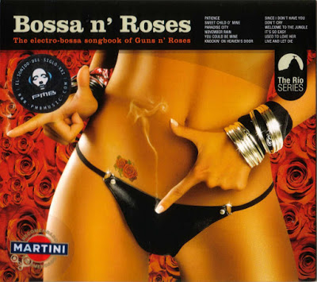
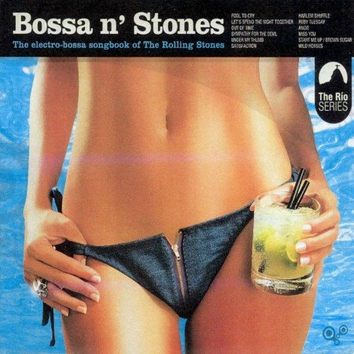

POSTS
[Bossanova]Amazonics 의 Since I Don't Have You(from Bossa n'Rosses)
저는 지금 빠삭 구운 노가리에 OB blue 한 캔하고 있습니다. 무려 500ml짜리!
원래는 보라매 공원에서 맥주까면서 기타나 한판 칠려고 했는데
설겆이도 넘 밀리고, 내일 도시락도 싸야 해서… -.- 그냥 패스….
오늘 밤 마무리 곡은, 여름도 가까워 오고 해서 보사노바로 골랐습니다.
Amazonics 의 Since I Don’t Have You 입니다. 앨범 ‘Bossa n’Rosses’의 수록곡인데요,
눈치채신 분 있으신지 모르겠지만 Bossa n’Rosses 는 Guns and Roses의 곡들을 보사노바로 편곡한 앨범입니다.
Patience, Sweet Chid O´mine, Used To Love Her 같은 주옥같은 곡들이 보사노바로 편곡되어 있는데요.
보사노바로는 정말 안어울리는 곡들이 대부분인 반면 절묘하게 편곡된 곡도 조금 있습니다. :-(
곡 편성이 너무 비슷비슷하여 계속 듣고 있으면 조금 지겹기도 합니다.

너무나도 감사한 CD 쟈겟 입니다.
(앨범 자켓만큼 편곡에 신경 좀 썼으면 더 좋았을 것을…. ㅡ.ㅡ)
아래는 자매품 Bossa N’ stones 입니다. 어느 밴드를 리메이크 했을까요?

(여인이 들고 있는 음료는 까이피리냐 Caipirinha 라고 하는 브라질 대표 칵테일입니다.
브라질리안 파티에서는 절대 빼놓을 수 없는 음료입니다.)